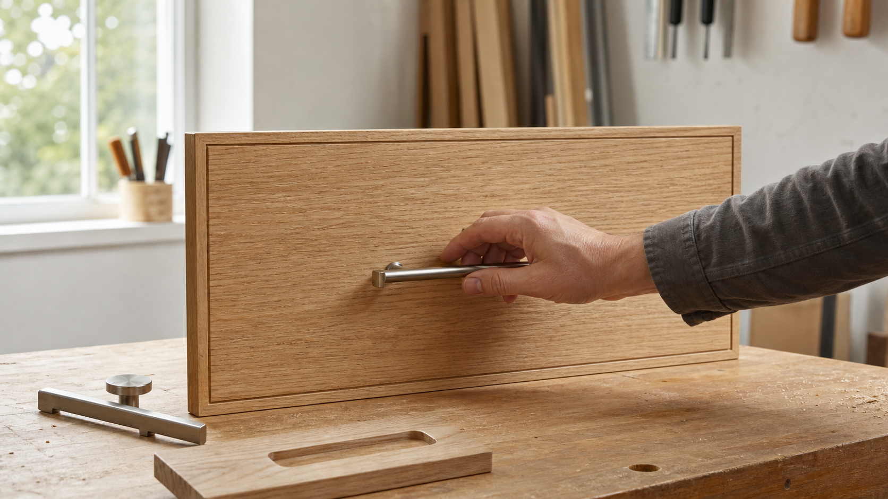

서랍 손잡이 위치가 사용감을 바꾸는 이유

서랍 손잡이는 작은 부속처럼 보이지만, 사용자가 가구와 처음 접촉하는 인터페이스입니다. 같은 서랍이라도 손잡이가 너무 낮거나 높으면 손목이 꺾이고, 너무 작으면 손끝으로만 당기게 됩니다. 반대로 손가락이 자연스럽게 들어가고 힘이 서랍 중심으로 전달되면 레일이나 목재 구조가 특별히 바뀌지 않아도 훨씬 부드럽게 느껴집니다.
좋은 손잡이 설계는 장식과 공학 사이에 있습니다. 앞판의 비례, 손잡이의 폭과 돌출, 내부 수납물의 무게, 사용자의 키와 자세가 함께 작동하기 때문입니다. 그래서 손잡이는 마지막에 고르는 액세서리가 아니라, 서랍의 크기와 쓰임을 정할 때 함께 검토해야 하는 제작 요소입니다.
손잡이는 힘의 방향을 정합니다
서랍을 여는 힘은 단순히 앞으로 당기는 힘만이 아닙니다. 손잡이를 잡는 순간 손목, 팔꿈치, 어깨가 한 줄로 이어지고, 그 방향이 서랍 레일과 맞을수록 불필요한 비틀림이 줄어듭니다. 손잡이가 서랍 앞판의 중앙선에서 크게 벗어나면 당기는 힘이 한쪽으로 치우쳐 레일 마찰이 커지고, 얕은 손잡이는 손끝 힘에 의존하게 만들어 반복 사용 때 피로를 높입니다.
넓고 무거운 서랍에서는 이 차이가 더 분명합니다. 한 개의 작은 노브만 중앙에 있으면 외관은 단정하지만, 실제 사용자는 손가락 끝으로 좁은 지점을 당겨야 합니다. 바 손잡이나 두 개의 노브를 쓰면 힘이 더 넓게 나뉘고, 손의 위치를 몸에 맞게 조금 조절할 수 있습니다. 다만 손잡이가 많다고 항상 좋은 것은 아닙니다. 앞판의 두께, 레일의 하중 등급, 손잡이 체결부의 보강까지 함께 맞아야 합니다.
좋은 손잡이는 세게 움켜쥐지 않아도 됩니다
접근성 기준에서 말하는 조작부의 원칙은 가정용 가구에도 좋은 참고가 됩니다. 미국 2010 ADA Standards는 공공 시설의 조작부에 대해 한 손으로 조작 가능하고, 강한 쥠이나 집기, 손목 비틀림을 요구하지 않아야 한다고 설명합니다. 주거용 서랍 손잡이가 이 기준의 직접 적용 대상은 아니지만, “힘을 덜 들이고 자연스럽게 잡히는가”를 판단하는 데 유용한 관점입니다.
손가락이 들어갈 틈이 좁은 컵 손잡이, 모서리가 날카로운 금속 손잡이, 매우 작은 노브는 디자인 의도가 분명해도 사용자에 따라 불편할 수 있습니다. 특히 매일 여닫는 주방 서랍, 아이가 쓰는 수납장, 고령자가 사용하는 침실 가구라면 손끝으로 집는 방식보다 손가락 여러 개가 들어가고 손목이 중립에 가까운 방식이 더 안정적입니다.
위치는 앞판의 비례와 사용 자세를 함께 봅니다
서랍 손잡이를 가운데에 두는 방식은 가장 무난하고 제작 오차도 관리하기 쉽습니다. 하지만 모든 서랍에 같은 중앙 배치가 최선은 아닙니다. 낮은 위치의 깊은 서랍은 손잡이를 조금 위쪽에 두면 허리를 덜 숙이고 당길 수 있고, 얕은 상단 서랍은 앞판 중앙 배치가 시각적으로 안정적입니다. 키가 큰 수납장에서는 사용자가 서 있는 위치와 손이 닿는 높이도 함께 고려해야 합니다.
전문 인테리어 매체에서 주방 하드웨어 배치를 설명할 때도 서랍 폭이 넓어지면 손잡이 수와 위치를 달리 보라고 권합니다. 이는 미적인 균형만의 문제가 아닙니다. 손잡이가 사용자의 손이 자연스럽게 도착하는 곳에 있어야 서랍 앞판을 비틀어 당기지 않고, 반복 동작에서도 손목과 어깨의 부담이 작아집니다.
돌출과 여유 공간은 촉감을 결정합니다
손잡이의 돌출은 시각적으로는 몇 밀리미터 차이처럼 보이지만, 실제로는 손가락 마디가 들어갈 수 있는지와 직결됩니다. 너무 낮게 붙은 바 손잡이는 손톱이나 손끝이 앞판에 먼저 닿고, 너무 깊은 매입 손잡이는 손가락을 걸기 위해 손목을 꺾게 만듭니다. 반대로 충분한 여유가 있으면 사용자는 의식하지 않고 손가락을 넣고 당길 수 있습니다.
NIOSH와 Cal/OSHA가 함께 펴낸 수작업 운반 지침은 작업 부담을 줄이는 방법으로 더 나은 그립과 제어를 위한 손잡이 추가, 손과 어깨의 접촉 압력 감소, 힘이 덜 드는 작업 방식을 제안합니다. 이 원리는 가구에도 이어집니다. 손잡이는 서랍을 장식하는 부품이면서 동시에 힘을 편하게 전달하는 작은 도구입니다.
매입 손잡이와 돌출 손잡이는 성격이 다릅니다
매입 손잡이는 외관을 조용하게 만들고 동선에 걸리는 요소를 줄입니다. 좁은 복도, 침대 옆 협탁, 아이 방 수납장처럼 몸이 스치는 곳에서는 좋은 선택이 될 수 있습니다. 다만 손가락을 넣는 홈의 깊이와 모서리 처리가 부족하면 손끝에 압력이 집중됩니다. 손을 넣는 안쪽 면까지 부드럽게 다듬고, 마감이 뭉치지 않게 관리해야 편합니다.
돌출 손잡이는 잡는 방향이 명확하고 힘을 크게 전달하기 쉽습니다. 무거운 주방 서랍이나 공구 서랍에는 장점이 큽니다. 대신 옷이나 동선에 걸릴 수 있으므로 가구가 놓일 공간을 함께 봐야 합니다. 손잡이 끝이 날카롭게 끊기지 않고, 바깥으로 나온 부분이 지나치게 길지 않으며, 체결 나사가 반복 하중을 견디도록 보강되어야 합니다.
손잡이 선택은 제작 품질을 드러냅니다
손잡이가 비뚤어져 있거나, 좌우 간격이 조금만 어긋나도 가구 전체가 덜 정교해 보입니다. 반대로 정확히 맞춘 손잡이는 앞판 줄눈, 레일 간격, 목재 결 방향과 함께 가구의 완성도를 조용히 보여 줍니다. 손잡이 구멍은 한번 뚫으면 되돌리기 어렵기 때문에 실제 하드웨어를 대고 손이 닿는 높이와 폭을 확인한 뒤 가공하는 것이 좋습니다.
목간이 손잡이를 볼 때 중요하게 생각하는 기준은 “보기에 좋은가”에서 끝나지 않습니다. 손이 자연스럽게 들어가는지, 힘이 앞판 중심으로 전달되는지, 반복해서 열고 닫아도 피로하지 않은지, 가구가 놓일 공간에서 걸림이 없는지를 함께 봅니다. 작은 손잡이가 매일의 사용감을 바꾸고, 그 사용감이 결국 가구의 인상을 오래 결정합니다.